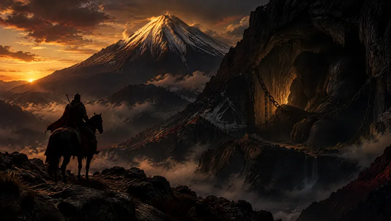
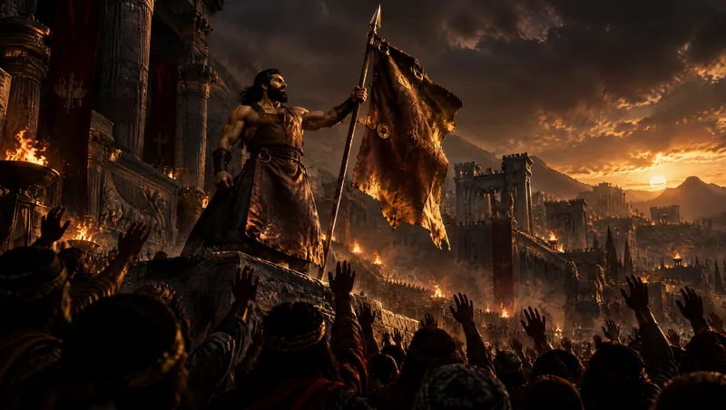
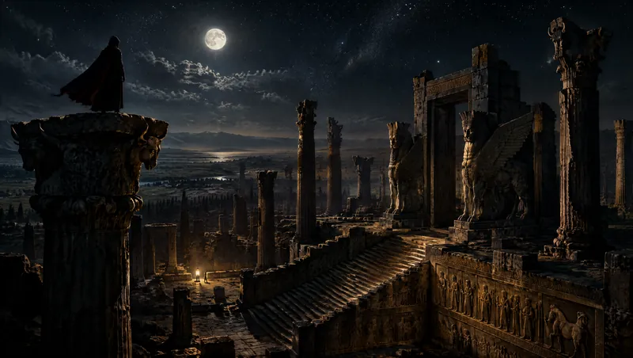
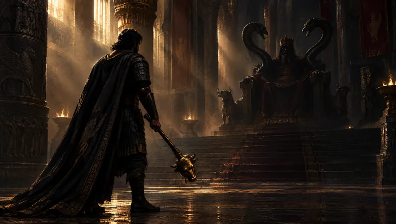

برای آزادی ایران بجنگید.
داخل ایران، اینجا نقشه میکشید و هیچکس نمیفهمه کی هستید. بیرون از ایران، شما صدایی هستید که دست رژیم بهش نمیرسه.
داخل ایران هستید؟ امن عضو بشید: یه اسم ساختگی، یه ایمیل که فقط برای همین ساختید، و فیلترشکن. من هیچوقت نمیپرسم کجا هستید. چطوری امن عضو بشید
شبیهسازها و ابزارها
خودتون قضاوت کنید
هر جبهه الان کجاست، کی افتاده، کی داره خبر رو بهتون میگه، و خودتون کجا وایسادید.
- سناریوها: ایران، اوکراین، تایوانایران، اوکراین و تایوان: هر جبهه همین الان کجاست، و بعدش چی ممکنه پیش بیاد.یه سناریو اجرا کنید
- شبیهساز خیزشهر شهر ایران: نیروهای رژیم کوچه به کوچه، و نقشهای که پایینشون میاره.شهرتون رو پس بگیرید
- سران رژیم۷۸ نفر از سران جمهوری اسلامی رفتن و ۶۰۸ نفر هنوز سر جاشونن.سران رژیم رو ببینید
- اتاق رصدخبرهای ایران هر ساعت، فارسی و انگلیسی، و کنار هر منبع نوشته کی پشتشه.وارد اتاق رصد بشید
- نمرهٔ خودتون دربارهٔ ایرانسر ۱۶ تا موضوعی که کنگره دربارهٔ ایران بهش رأی داده رأی بدید و یه نمره از ۱۰۰ بگیرید.نمرهٔ خودتون رو بگیرید

آماده باشیم
راهنمای ایمنی برای روزهای سخت
وقت حمله، تو خیابان، وقتی اینترنت قطعه: کارهایی که جون شما و خانوادهتون رو نگه میداره. بدون اینترنت هم باز میشه.
برنامههای عمومی بیرون از ایران
تجمعها، نمایش فیلمها و مراسمهایی بیرون از ایران که از قبل عمومیان. برنامهتون رو بذارید، من اینجا و تو صفحهٔ اول نشونش میدم.
مأموریتهای شما
چهار قدم، به ترتیب: حسابتون رو بسازید، خبر جمع کنید، بیرون از ایران آدمهای مطمئن رو ببینید، و بعد جلودار بشید.
تا حالا ۱۸ نفر اینجا حرفشون رو زدن.



تو واشینگتن کی با شماست
هر ۵۳۹ عضو کنگرهٔ آمریکا، هر کدوم با یه نمره از ۱۰۰، از روی رأیها و حرفهای خودشون. چطور نمره میدم
۳ نوامبر رأی میدید؟ راهنمای رأی دادن تو ایالتتون: همهٔ مهلتها، و چیزهایی که باید همراهتون باشه
ایرانیها اینجا با هم بحث میکنن. حق با کیه؟
همینجا بگید تا بقیه هم جوابتون رو بدن؛ فارسی یا انگلیسی.
گفتوگو
همهٔ گفتوگوها
همهٔ گفتوگوهای سایت یه جا: تازهترها بالاتر، فارسی و انگلیسی کنار هم. روی هر کدوم بزنید تا همینجا بخونیدش، یا روی اسمش تا صفحهش باز بشه. اینا حرف خود خوانندههاست، نه حرف من.
اطلاعات خصوصی هیچکس رو ننویسید. قوانین گفتوگو و اطلاعاتی که از شما نگه میدارم
بیاید حرف بزنیم
برنامه هر روز تو یوتیوب زنده پخش میشه، و کسایی که میبیننش بین برنامهها تو دیسکورد با هم نقشه میکشن.